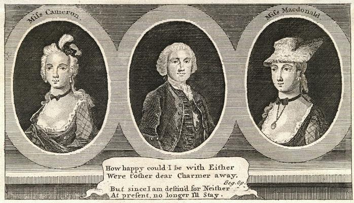

Jenny Cameron of Glendessary
Jenny's Welcome to Charlie
Variant 1
Irish Reel (Irish Title:"Fáilte Sineid Roim Catal" or "Fáilte Shinéad roimh Chathal")
Sequenced by Ch.Souchon
Variant 2
Played on the violin by Shaman Starseed


|
Bonnie Jean Cameron
by George Eyre-Todd circa 1750 Ye'll a' hae heard tell o' bonnie Jeanie Cameron, How she fell sick, and she was like to dee, And a' that they could recommend her Was ae blithe blink o' the Young Pretender. Rare, oh rare, Bonnie Jeanie Cameron! Rare, oh rare, Jeanie Cameron! To Charlie she wrote a very long letter, Stating who were his friends and who were his foes; And a' her words were sweet and tender, To win the heart o' the Young Pretender. Rare, oh rare, Bonnie Jeanie Cameron! Rare, oh rare, Jeanie Cameron! Scarcely had she sealed the letter wi' a ring, When up flew the door, and in cam' her king: She prayed to the saints, and bade angels defend her, And sank i' the arms o' the Young Pretender. Rare, oh rare, Bonnie Jeanie Cameron! Rare, oh rare, Jeanie Cameron! |
La belle Jeanne Cameron
par George Eyre-Todd vers 1750 Qui ne connait le nom de Jenny Cameron? La maladie l'aurait emportée si, dit-on, Elle n'avait posé son regard réjoui, Ne fut-ce qu'un instant, sur le Prince Charlie. Oh, la noble, la belle Jenny Cameron! La noble Jenny Cameron! On dit qu'elle écrivit à Charles un long billet, Lui nommant ses amis, ses rivaux acharnés; Et ses mots composaient une tendre harmonie, Propre à gagner le coeur du bon Prince Charlie. Oh, la noble, la belle Jenny Cameron! La noble Jenny Cameron! Mais à peine avait-elle enfin scellé son pli Que la porte s'ouvrit et que son roi surgit: Elle implora l'aide du Ciel, du Saint Esprit, Et tomba dans les bras du bon Prince Charlie. Oh, la noble, la belle Jenny Cameron! La noble Jenny Cameron! (Trad. Ch.Souchon(c)2005) |
|
The tune is also known as:
"Jennie and the Weaver", "Jennie and the Weasel", "Highway to the Holburn", "Jenny danged the Weaver", "Jenny Cameron's Rant".
Jean Cameron of Glendessary raised 300 men and led them to the Raising of the Standard on 19th August 1745.
|
La mélodie porte aussi d'autres titres:
"Jennie and the Weaver", "Jennie and the Weasel", "Highway to the Holburn", "Jenny danged the Weaver", "Jenny Cameron's Rant".
Jeanne Cameron de Glendessary réunit 300 hommes et les conduisit à la levée de l'étendard le 19 août 1745.
|

"Charles flanked by Jenny Cameron and
Flora McDonald
". From "London Magazine" - March 1747.
"Charles entouré de Jenny Cameron et de
Flora McDonald
". "London Magazine" - Mars 1747.
The satirical rhyme under the picture reads thus:
Un poème satirique accompagne cette gravure:
|
"How happy could I be with either
Were th'other dear charmer away! But since I am destin'd for neither, At present no longer I'll stay. |
"L'une ou l'autre m'aurait comblé
Si sa rivale était absente. Aucune ne m'est destinée: Je m'en vais séance tenante." |